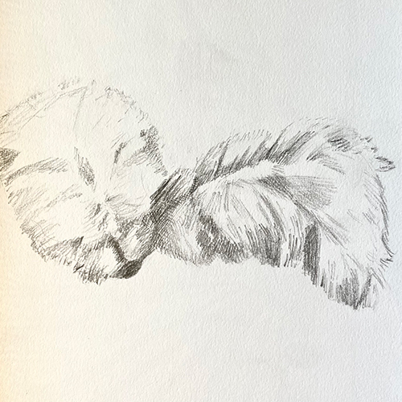

I do many things! Like so much, honestly. I wonder how I’m always feeling occupied, but it’s because I quite literally am. :p

I am working as a digital analytics intern for a government news broadcasting company called Voice of America. This work is definitely interesting to me and it keeps me quite busy outside of school. It’s a bit far from my current UI/UC major though, so I have that to work out in the next few years. I’m really determined to self-study a variety of tech-skills and enhance my portfolio.
Generally, I like to make art and be creative! Here's a little doodle of my two puppers.